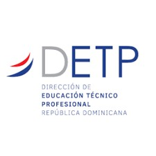
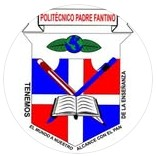

<!-- Header institucional -->
<div class="container-fluid py-3 mb-2 border-bottom bg-white">
  <div class="row align-items-center">
    <div class="col-4 text-center">
      
    </div>
    <div class="col-4 text-center">
      
    </div>
    <div class="col-4 text-center">
      
    </div>
  </div>
  <div class="text-center mt-2">
    <strong>Ministerio de Educación</strong><br>
    <strong>Dirección de Educación Técnico Profesional</strong><br>
    <strong>Instituto Politécnico Padre Fantino</strong><br>
    <span style="font-size:1.1em; display:block; margin-top: 10px;">
      Formulario de Acompañamiento Docente en Centros Educativos de la<br>
      Modalidad Técnico Profesional, Año Escolar 2024-2025.
    </span>
  </div>
</div>
